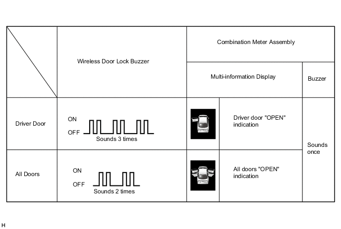

CUSTOMIZE ENTRY AND START SYSTEM (for Entry Function)
Tech Tips
The following items can be customized.
Note
When the customer requests a change in a function, first make sure that the function can be customized.
Record the current settings before customizing.
Customizing with the GTS
Connect the GTS to the DLC3.
Turn the power switch on (IG).
Turn the GTS on.
Enter the following menus: Customize Setting / Wireless Door Lock, Warning or Entry & Start operation.
Select the setting by referring to the table below.
| Tester Display | Description | Default | Setting | ECU |
|---|---|---|---|---|
| Wireless Control | Function that turns the wireless door lock control system on or off. | ON | 0:OFF,1:ON | Main body ECU (Multiplex network body ECU) |
| Hazard Answer Back | Function that flashes the hazard warning lights once when the doors are locked by the entry lock function and twice when the doors are unlocked by the entry lock function. | ON | 0:OFF,1:ON | Main body ECU (Multiplex network body ECU) |
| Open Door Warning | Function that sounds a buzzer when the lock sensor on the door outside handle assembly is touched to perform an entry lock operation with a door open.*1 | ON | 0:OFF,1:ON | Main body ECU (Multiplex network body ECU) |
| Auto Lock Time | Function that regulates the interval between unlocking and automatic relocking of doors. | 30 s | 00:30 s,01:60 s,10:120 s | Main body ECU (Multiplex network body ECU) |
| Wireless Buzzer Resp | Function that enables/disables the wireless door lock buzzer response*2 | ON | 0:OFF,1:ON | Main body ECU (Multiplex network body ECU) |
| Wireless Buzzer Vol | Function that adjusts the wireless door lock buzzer volume*2 | Level5 | 0000:Level7,0001:Level6,0010:Level5,0011:Level4,0100:Level3,0101:Level2,0110:Level1,0111:Level0 | Main body ECU (Multiplex network body ECU) |
*1: w/ Door Ajar Warning Buzzer Function
*2: w/ Wireless Door Lock Buzzer Answer-back Function
| Tester Display | Description | Default | Setting | ECU |
|---|---|---|---|---|
| Key Low Battery Warning | Enables or disables the sounding of the buzzer when the transmitter battery is low and the power switch is turned off after being on (IG) for 20 minutes or more. | ON | 0:OFF,1:ON | Certification ECU (Smart key ECU assembly) |
| Tester Display | Description | Default | Setting | ECU |
|---|---|---|---|---|
| Park Wait Time | Function that sets the period of time (lock confirmation time) that the door is prevented from being unlocked by operating the front door outside handle assembly or rear door outside handle assembly after an entry lock operation is performed. | 2.5s | 00:0.5s,01:1.5s,10:2.5s,11:5s | Certification ECU (Smart key ECU assembly) |
| Back Door Opening Operation | Function that sets the back door opener switch (open switch) operation necessary to open the back door when the user is carrying the electrical key transmitter sub-assembly. | Long | 00:Long,01:Twice,10:OFF | Certification ECU (Smart key ECU assembly) |
| Door Unlock Mode2 | Function that sets which doors are unlocked by the entry unlock function. | All or Driver*1 | 0:All,1:Driver | Certification ECU (Smart key ECU assembly) |
| Auto Entry Cancel SW | Function that enables or disables the entry and start system. | OFF | 0:OFF,1:ON | Certification ECU (Smart key ECU assembly) |
| Touch Activation Over Threshold | Function that limits the number of times the entry lock function can be operated consecutively. When set to Not Active entry lock function can be operated an unlimited number of times consecutively. | Active or Not Active*1 | 0:Active,1:Not Active | Certification ECU (Smart key ECU assembly) |
| Door Unlock Sensor Touch Time Adjust | Function that sets the length of time the unlock sensor on the door outside handle assembly (for driver door) must be touched to unlock all of the doors*2 | Middle | 00:OFF,01:Short,10:Middle,11:Long | Certification ECU (Smart key ECU assembly) |
*1: Default setting differs depending on the country
*2: w/ Canister Pump Module
Customizing with the multi-display (w/ Multi-display)
Turn the power switch on (IG).
Enter the following menus: APPS / Setup / Vehicle / Vehicle customization / Door lock settings. (for Type A)
Enter the following menus: MENU / Setup / Vehicle / Vehicle customization / Door lock settings. (for Type B)
Enter the following menus: MENU / Edit/settings / System / Vehicle settings / Vehicle customization / Door lock settings. (for Type C)
Enter the following menus: SETUP / Vehicle / Vehicle customization / Door lock settings. (for Type D)
Select the setting by referring to the table below.
| Display | Description | Default | Setting | Relevant ECU |
|---|---|---|---|---|
| Select doors to unlock | Function that sets which doors are unlocked by the entry unlock function. | All Doors or Driver's Door*1 | All Doors or Driver's Door | Certification ECU (Smart key ECU assembly) |
| Entry and start system | Function that enables or disables the entry and start system. | On | Off or On | Certification ECU (Smart key ECU assembly) |
| Auto relock timer | Function that turns the auto lock function on or off. | 30 sec. | Off, 30 sec., 60 sec. or 120 sec. | Main body ECU (Multiplex network body ECU) |
| Lock/unlock feedback lights | Function that flashes the hazard warning lights once when the doors are locked by the entry lock function, and twice when the doors are unlocked by the entry lock function. | On | Off or On | Main body ECU (Multiplex network body ECU) |
| Lock feedback volume | Buzzer answer-back volume*2 | 5 | 0, 1, 2, 3, 4, 5, 6 or 7 | Main body ECU (Multiplex network body ECU) |
*1: Default setting differs depending on the country.
*2: w/ Wireless Door Lock Buzzer Answer-back Function
Customizing with the multi-information display (w/o Multi-display)
Turn the power switch on (IG).
Select the setting tab in the multi-information display.
Enter the following menus: Vehicle Settings / Door lock settings.
Select the setting by referring to the table below.
| Display | Description | Default | Setting | Relevant ECU |
|---|---|---|---|---|
| Select doors to unlock | Function that sets which doors are unlocked by the entry unlock function. | All Doors or Driver's Door*1 | All Doors or Driver's Door | Certification ECU (Smart key ECU assembly) |
| Entry and start system | Function that enables or disables the entry and start system. | On | Off or On | Certification ECU (Smart key ECU assembly) |
| Auto relock timer | Function that turns the auto lock function on or off. | 30 sec. | Off, 30 sec., 60 sec. or 120 sec. | Main body ECU (Multiplex network body ECU) |
| Lock/unlock feedback lights | Function that flashes the hazard warning lights once when the doors are locked by the entry lock function, and twice when the doors are unlocked by the entry lock function. | On | Off or On | Main body ECU (Multiplex network body ECU) |
| Lock feedback volume | Buzzer answer-back volume*2 | 5 | 0, 1, 2, 3, 4, 5, 6 or 7 | Main body ECU (Multiplex network body ECU) |
*1: Default setting differs depending on the country.
*2: w/ Wireless Door Lock Buzzer Answer-back Function
Entry unlock mode change function (manual operation)(w/ Canister Pump Module)
The following entry unlock modes can be selected when using the entry unlock mode change function.
All door unlock mode: When the unlock sensor of a front door outside handle assembly or rear door outside handle assembly is touched, all of the doors are unlocked simultaneously.
Driver door unlock mode: When the unlock sensor of the front door outside handle assembly (for driver door) is touched, only the driver door is unlocked. If any other door door outside handle assembly is touched, all of the doors are unlocked simultaneously.
When customizing through manual operation:
Turn the power switch off.
Check that the LED of the electrical key transmitter sub-assembly is not illuminated, and then press and hold the lock and unlock switches of the electrical key transmitter sub-assembly for 5 seconds or more while the electrical key transmitter sub-assembly is in the exterior detection area.
Check the current setting.
Tech Tips
The mode changes from all door unlock mode to driver door unlock mode and then back to all door unlock mode.
The answer-back (wireless buzzer, buzzer in the combination meter assembly) operation for each mode is indicated in the table below.
| Currently Selected Mode | Answer-back (Wireless Buzzer) | Answer-back (Buzzer in Combination Meter Assembly) |
| All door unlock mode | Buzzer sounds twice (short beeps) | Buzzer sounds once |
| Driver door unlock mode | Buzzer sounds 3 times (short beeps) | Buzzer sounds once |
Release the lock and unlock switches of the electrical key transmitter sub-assembly.
Check that the LED of the electrical key transmitter sub-assembly is not illuminated, and then press and hold the lock and unlock switches of the electrical key transmitter sub-assembly for 5 seconds or more to change the mode.
Tech Tips
Repeat the procedure as necessary to select the desired mode.
Unlock the doors using the wireless function, and then open any door.

Entry cancel function (manual operation)
Tech Tips
While the entry and start system is canceled, it is possible to lock and unlock the doors with the wireless function, and the hybrid control system can be started by holding the electrical key transmitter sub-assembly near the power switch.
The following functions are disabled when the entry and start system is canceled.
Entry unlock/lock functions
Push-button start function
Key lock-in prevention function
Entry warning functions
When canceling the entry and start system through manual operation:
Make sure the following conditions are met:
The power switch is off.
The driver door is closed.
The driver door is unlocked.
Press the unlock switch of the electrical key transmitter sub-assembly.
Open the driver door within 5 seconds of completing the step above (driver door: closed → opened).
With the driver door open, press the unlock switch of the electrical key transmitter sub-assembly 2 times within 5 seconds of completing the step above.
Note
If the driver door is closed before or while pressing the unlock switch, the entry cancel setting mode will end.
Perform the following procedure within 30 seconds of completing the step above.
Close and open the driver door twice (driver door: open → closed → opened → closed → opened).
With the driver door open, press the unlock switch of the electrical key transmitter sub-assembly 2 times.
Note
If the driver door is closed before or while pressing the unlock switch, the entry cancel setting mode will end.
Close and open the driver door (driver door: open → closed → opened).
Close the driver door within 5 seconds (driver door: open → closed).
Check that the wireless buzzer sounds twice (short beeps) to confirm that the entry and start system has been canceled.
Perform the following procedure to restore the entry and start system to the active state from the canceled state.
Perform the procedure to cancel the entry and start system again.
Check that the wireless buzzer sounds once (short beep) to confirm that the entry and start system has been restored to the active state.
Tech Tips
The system changes between the canceled state and the active state each time the procedure to cancel the system through manual operation is performed.
The buzzer sounds twice when the system changes from the active state to the canceled state, and sounds once when the system changes from the canceled state to the active state.